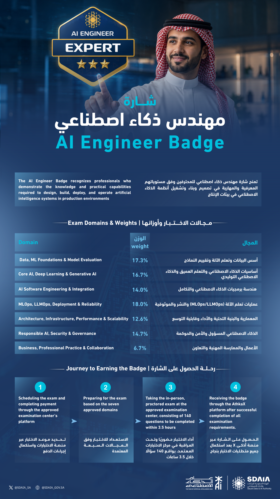

Read the exam as a system
The supplied AI-Badge.png is the authoritative blueprint for this workspace. The weights guide practice allocation, but prerequisite relationships still determine the order of teaching.

Working format: the image claims 140 questions in 3.5 hours. This course uses that claim to design timed practice. It does not infer an official pass mark from it.
Domain map
| Domain | What to be able to do | Weight |
|---|---|---|
| Data, ML Foundations & Model Evaluation | Frame data, prevent leakage, choose validation methods, and defend metrics. | 17.3% |
| Core AI, Deep Learning & Generative AI | Explain representations, optimization, neural architectures, Transformers, and generative-system choices. | 16.7% |
| AI Software Engineering & Integration | Expose reliable interfaces, validate inputs and outputs, test behavior, and integrate models into products. | 14.0% |
| MLOps, LLMOps, Deployment & Reliability | Make training and release reproducible, operate services, monitor quality, and respond to failure. | 18.0% |
| Architecture, Infrastructure, Performance & Scalability | Choose system boundaries and resources, find bottlenecks, and plan capacity and graceful degradation. | 12.6% |
| Responsible AI, Security & Governance | Identify harms and attacks, design controls, document decisions, and assign accountability. | 14.7% |
| Business, Professional Practice & Collaboration | Translate needs into outcomes, communicate uncertainty, and collaborate across technical and non-technical roles. | 6.7% |
One lifecycle, seven lenses
When a scenario feels ambiguous, walk through the lifecycle. A strong answer usually connects more than one domain.
01 / frame
Who needs what outcome, under which constraints?
02 / learn
What data, model, and evaluation design fit the problem?
03 / integrate
What interface makes the AI component testable and safe?
04 / operate
How will the service scale, stay reliable, and improve?
Responsible AI and security are not a final checkbox. Apply them at every step, then make the decision visible to the people accountable for the outcome.
Next: take the diagnostic.
Keep terms consistent with the glossary.